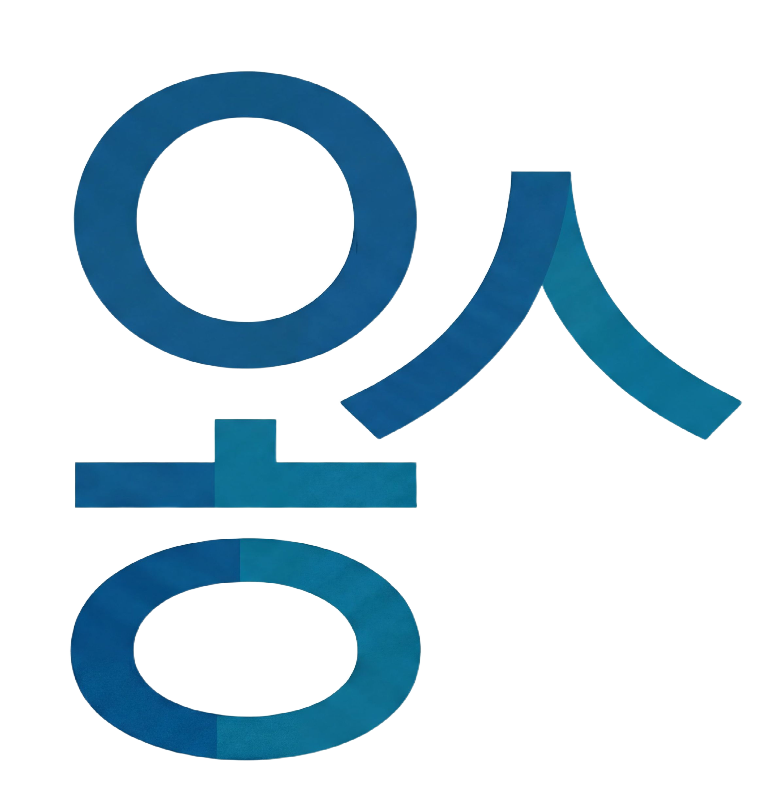
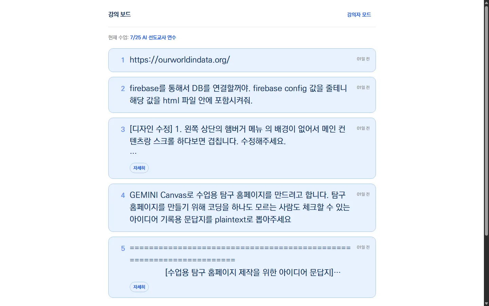
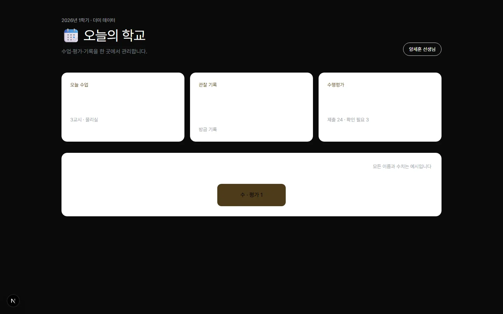
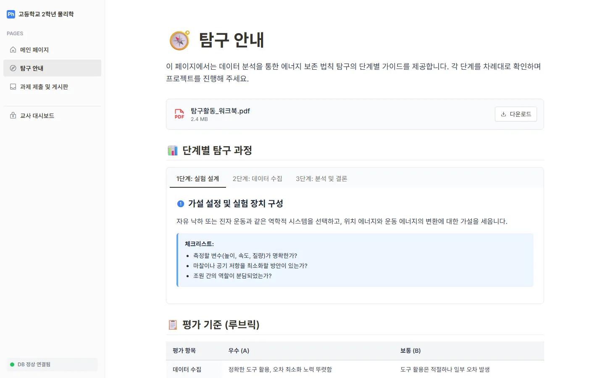
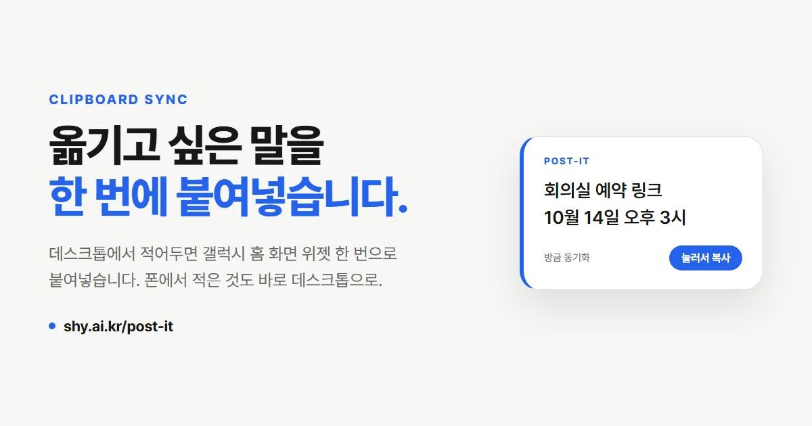

출결 관리
결석, 지각·조퇴·결과, 감염병, 체험학습을 각각 쌓아두면 '출결 모음'이 학생별로 자동 집계합니다. NEIS에 입력하기 전 한 학기치를 한 화면에서 확인하고 통계까지 뽑습니다.

물리교사 · AI 바이브코딩 연수
인천해송고등학교 물리교사 양세훈입니다.
개발을 전공하지 않았지만, AI와 함께 수업에 필요한 시뮬레이션과 웹앱을 만들어 왔습니다.
바이브코딩은 코딩을 대신해주는 도구가 아니라, 교사가 이미 가지고 있는 가능성을 꺼내주는 도우미라고 생각합니다.
인천광역시교육청 - 인천해송고등학교 - 물리교사 양세훈
강의 가능 주제
개발을 몰라도 필요한 수업 도구를 직접 제작할 수 있도록 도와드립니다.
시뮬레이션
처음 시뮬레이션을 제작한 순서대로 보여드립니다. 왼쪽에서 오른쪽으로 갈수록 나아지는 게 보이실 겁니다.
웹앱 · 도구

바이브코딩 연수에서 실습용 프롬프트를 선생님들께 나눠줄 방법이 마땅치 않았습니다. 화면에 띄우면 받아 적어야 하고, 메신저로 보내면 흐름이 끊깁니다.
HTML 파일 하나입니다. 강의자가 글을 쓰면 Firebase 실시간 데이터베이스를 거쳐 수강생 화면에 즉시 뜨고, 복사 버튼 하나로 클립보드에 담깁니다. 수업을 등록해 두면 그 수업 글만 양쪽에 보입니다. 서버 없이 GitHub Pages로 무료 배포했습니다.
2026 인공지능 활용 선도교사 연수에서 실제로 썼고, 참여 선생님들의 만족도가 높았습니다. 연수에 필요한 도구를 연수하면서 직접 만들어 쓴 셈입니다.

수업 계획, 관찰 기록, 수행평가, 세특, 출결, 행정 업무. 교사 한 사람의 일이 열 개 프로그램에 흩어져 있습니다. 하나로 모으고 싶었습니다.
웹사이트를 학교 공간에 빗대 설계했습니다 — 세팅실, 교실, 교무실, 통계실, 인쇄실. 담임과 비담임 기능을 나눴고 나이스 학사일정·급식과 컴시간알리미 시간표는 외부 API로 자동으로 채웁니다. Next.js 15와 Supabase로 만들었고, 학생 정보는 제 서버가 아니라 선생님 계정에 만든 선생님의 데이터베이스에만 저장됩니다.
학생의 출결 상황, 보고서 제출 이력과 수업 진도, 관찰 기록들을 까먹지 않고 기록할 수 있게 되었습니다. 2026년 9월 v1.0.0을 공개했습니다. 설치 문서를 따라가면 누구나 자기 Vercel과 Supabase에 무료로 설치해 쓸 수 있고, 업데이트는 자동으로 반영됩니다.

학생이 탐구 주제를 들고 와도 "그래서 어떤 센서를 써야 하나요"에서 멈춥니다. 아두이노 자료는 인터넷에 많지만, 검증되지 않은 배선도와 동작하지 않는 예제 코드가 섞여 있어 학생 혼자서는 골라내기 어렵습니다.
측정하고 싶은 것을 문장으로 적으면 센서를 추천하고, 검증된 레시피의 배선도와 스케치까지 이어지도록 만들었습니다. 준비물·배선·코드·탐구 설계·측정과 분석의 다섯 단계를 각각 한 화면으로 나눴습니다. 스케치의 계산 로직은 실제 보드 없이 PC에서 자동 검증하고, 회로는 Wokwi 시뮬레이션으로 확인한 것만 올립니다. React와 Firebase로 만들어 GitHub Pages에 배포했습니다.
학생이 교사에게 묻지 않고도 센서를 고르고 배선까지 스스로 진행합니다. 측정한 시리얼 데이터를 CSV로 바꿔 바로 그래프로 분석하는 것까지 한 곳에서 끝납니다.

2학년 물리학 수업에서 역학적 에너지 보존을 학생이 직접 측정한 데이터로 확인하는 탐구를 진행했습니다. 안내문, 워크북, 데이터 분석, 보고서 제출이 각기 다른 곳에 흩어지면 학생은 어디서부터 해야 할지부터 헤맵니다. 한 페이지 안에서 탐구가 끝나게 하고 싶었습니다.
HTML 파일 하나입니다. 노션처럼 왼쪽에 페이지 목록을 두고 탐구 안내와 루브릭을 단계별로 정리했습니다. 학생이 phyphox나 Tracker로 측정한 xlsx 파일을 올리면 위치·운동·역학적 에너지를 계산해 그래프로 보여주고, 그 분석 결과가 보고서 제출 화면으로 그대로 이어집니다. 제출물과 질문은 Firebase에 저장되어 교사 대시보드에서 조별로 모아 봅니다.
"그래서 에너지가 보존됐나요?"를 학생이 그래프로 스스로 확인합니다. 분석 요약이 세특 기초 자료로 함께 남아, 교사는 탐구가 끝난 뒤 기록을 처음부터 다시 쓰지 않아도 됩니다.

학교 PC에서 본 링크나 문장을 폰으로 옮길 때마다 메신저의 '나에게 보내기'를 열고, 찾고, 복사했습니다. 옮기고 싶은 말은 늘 짧은데 과정이 길었습니다.
웹앱은 GitHub Pages에, 데이터는 Firebase 실시간 데이터베이스에 두고 Google 로그인으로 양쪽을 같은 계정으로 묶었습니다. 폰 쪽은 처음으로 Kotlin으로 네이티브 안드로이드 앱과 홈 화면 위젯을 만들었습니다. 위젯을 누르면 서버에서 최신 글을 읽어 클립보드에 넣고, 폰에서 공유한 글은 데스크톱에 바로 나타납니다. 디자인은 이 사이트의 디자인 시스템을 그대로 따랐습니다.
웹앱만 만들던 데서 네이티브 앱까지 범위가 넓어졌습니다. 옮기고 싶은 말은 이제 위젯 한 번이면 끝나고, 서버 비용은 무료 티어 안에서 0원입니다.
새 학기마다 교실과 PC가 바뀝니다. 즐겨찾기, 공동인증서, 마우스 속도, 설치 프로그램을 하나씩 다시 맞추는 일이 매번 반복됩니다. 옮기고 싶은 건 정해져 있는데, 방법은 늘 손이었습니다.
.NET으로 만든 단일 실행 파일이라 USB에서 설치 없이 실행합니다. 옮길 항목을 체크하면 패스프레이즈로 암호화한 번들로 USB에 저장하고, 새 PC에서 가져옵니다. 옮긴 항목만 기록해 두었다가 원래 상태로 초기화할 수 있습니다. 폴더, 즐겨찾기, 공동인증서(GPKI·NPKI), 환경변수, 개인화, 설치 프로그램 목록(winget), 시작프로그램, Wi-Fi, 전원 계획, 폰트까지 구현했습니다.
처음 만든 Windows 데스크톱 프로그램입니다. 아직 개발 초기 단계이고, 브라우저 비밀번호와 로그인 쿠키 이전이 다음 목표입니다. 소스는 MIT 라이선스로 공개했습니다.
엑셀 업무자동화
결석, 지각·조퇴·결과, 감염병, 체험학습을 각각 쌓아두면 '출결 모음'이 학생별로 자동 집계합니다. NEIS에 입력하기 전 한 학기치를 한 화면에서 확인하고 통계까지 뽑습니다.
2022 개정 교육과정 성취기준을 시트에 두고, 문항을 만들 때마다 해당 성취기준을 붙여 카드로 정리합니다. 어떤 문항이 어느 성취기준을 묻는지가 문항 단위로 남습니다.
2022 개정 교육과정에 맞게 학생의 등급과 성취도를 쉽게 확인할 수 있습니다. 원하는 성취도 비율을 입력하면 추정분할점수도 예측하여 알려줍니다.
지금은 제가 쓰기 좋게 맞춰져 있습니다. 누구나 쓸 수 있게 정리되면 공개하겠습니다.
이력
2020 - 2021 충북대학교 물리교육과 MBL을 활용한 실험 수업 조교
2020 - 2021 충북대학교 과학영재교육원 담임교사
2023 - 2024, 2026 인천남부영재교육원 지도강사
2023 「MBL을 활용한 전기 실험 및 사례 나눔」 연수강사
2026.07–08 「2026 인공지능 활용 선도교사 연수」 지도강사
2026 「AI 에이전트 개발 프로젝트 전문가과정」 직무연수 수료 및 프로젝트 우수상 수상
Capabilities
Approach 01–06
아래는 2026 인공지능 활용 선도교사 연수에서 실제로 진행한 방식입니다. 대상과 목적에 맞춰 협의하여 조정합니다.
2026년 초, 영재원 교육과정을 세우면서 항공·우주를 대주제로 한 물리 수업을 맡게 되었습니다. 여러 실험과 이론 설명이 머릿속을 스쳐갔지만 대상은 중학생이었습니다. 그때 주변에서 이야기하던 '바이브코딩'을 저도 한번 해보자는 생각이 들었습니다.
유튜브와 검색으로 기초만 익혀 처음 만든 것이 항공기 풍동 시뮬레이션입니다. 보시면 조잡하고 깔끔하지 않습니다. 디자인도 코딩도 모르는 사람이었으니까요. 그런데 실제로 구동시켜 보면, 목표로 한 항공기의 비행 조건과 궤도 유지를 충실히 시뮬레이션합니다.
당연합니다. 저는 '물리교사'이기에 물리에 대한 도메인 지식은 충분히 갖추고 있었으니까요. 저는 이 부분이 모든 교사가 갖는 강점이라고 생각합니다. 바이브코딩은 단순히 코딩을 대신해주는 것이 아니었습니다. 교사가 가지고 있는 무궁한 가능성을 발현시켜주는 도우미였습니다.
항공기 풍동 → 뉴턴의 대포 → 화성 전이 → 전기회로 → 고전역학. 순서대로 보면 실력이 나아지는 것이 그대로 보입니다. 이 연수에서 제가 가장 드리고 싶은 메시지는 하나입니다. 시작하자. 지금 당장.
제가 직접 만든 강의 보드로 프롬프트를 실시간 공유하며, 선생님들이 각자 웹앱을 하나씩 제작합니다.
HTML·CSS·JS가 무엇인지, 로컬 프로그램과 웹앱은 어떻게 다른지, API와 프론트엔드·백엔드가 무엇인지 설명합니다. 이어 GitHub를 통한 배포와 Firebase를 통한 데이터베이스 연결까지 직접 실습합니다.
FAQ
저도 개발 전공자가 아닙니다. 물리교사이고, 코드는 AI에게 시켜서 씁니다. 이 사이트에 있는 시뮬레이션과 웹앱은 전부 그렇게 만들었습니다. 연수에서 다루는 것도 프로그래밍 문법이 아니라 "내가 원하는 것을 AI에게 정확히 설명하는 법"입니다.
인터넷이 되는 노트북 한 대면 됩니다. 연수에서는 Gemini, ChatGPT, Claude를 사용하는데 셋 다 무료 계정으로 실습이 가능합니다. 유료 결제는 꼭 필요하지 않습니다.
이 사이트에 올려둔 것들이 바로 그 예시입니다. 수업에 쓸 시뮬레이션, 반복 업무를 줄이는 엑셀 도구 같은 것들입니다. 선생님 교과와 업무에 맞는 것을 하나 완성해서 가져가시는 것을 목표로 합니다. GitHub 배포와 데이터베이스 연결까지 실습하므로, 만든 것을 실제로 다른 선생님이나 학생이 쓸 수 있는 상태까지 갑니다.
됩니다. 제가 물리교사라 예시가 물리에 몰려 있을 뿐, 방법 자체는 교과와 무관합니다. 오히려 핵심은 선생님이 자기 교과에 대해 이미 알고 있는 것입니다. 제가 물리 지식으로 시뮬레이션을 만들었듯, 선생님은 선생님의 도메인 지식으로 만드시게 됩니다. 실제로 출결·문항카드·성적처리처럼 모든 교과가 공통으로 쓰는 업무 도구도 같은 방식으로 만들었습니다.
연락